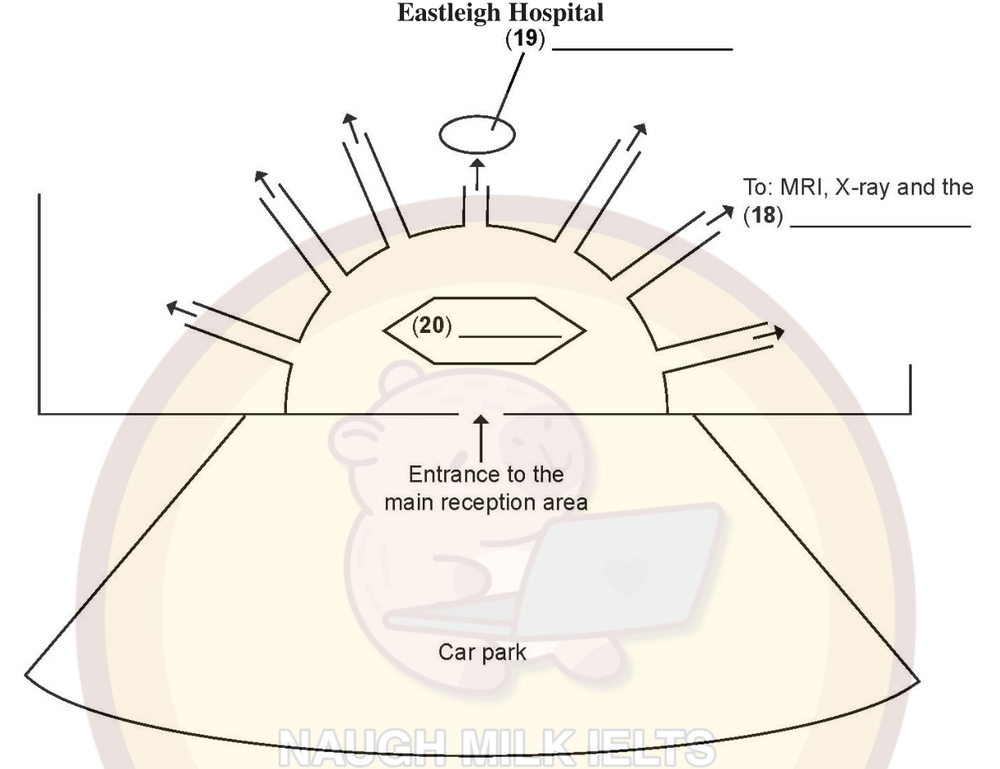

Gresham Garage
New Job Details
Customer’s Name:
Address: 18 Green Lane
Cranford
Postcode: CR8
Telephone:
Home: Not given
Work: Not given
Cell: 07538 983
Bill Payment Method:
Work Details: Problem with the
Complete the form below.
Write NO MORE THAN THREE WORDS AND/OR A NUMBER from the listening for each answer.
Gresham Garage
New Job Details
Customer’s Name:
Address: 18 Green Lane
Cranford
Postcode: CR8
Telephone:
Home: Not given
Work: Not given
Cell: 07538 983
Bill Payment Method:
Work Details: Problem with the
Answer: Stuart
Answer: 6FR
Answer: 645
Answer: Cash
Answer: Brakes
Complete the summary below.
Write NO MORE THAN TWO WORDS AND/OR A NUMBER from the listening for each answer.
Work on Mr. Clarke’s Toyota
Mr. Clarke left the car at the garage and so he got a taxi to take him home. The last service was approximately months ago, so he booked a service at the garage. He mustn’t forget the car when he goes to pick up the car. Mr. Clarke or his wife can pick the car up on 26th. The service costs pounds (including all the work the car needs) plus parts. The garage will ring Mr. Clarke if they need permission for any unexpected or expensive work.
Answer: 7
Answer: log book
Answer: Wednesday
Answer: 200
Choose the correct letter A, B or C.
Write the correct letter in box 10 on your answer sheet.
Speaker 0 In the IELTS test, you hear some recordings and you have to answer questions on them. You have time to read the instructions and questions and check your work. All recordings are played only once. The test is in four sections. Now turn to Section 1. Section 1. You will hear a conversation between a man and a woman discussing a repair to a car in a garage. First, you have some time to look at questions 1 to 5. Now the full test will begin. You should answer the questions as you listen, as the recording is not played twice. Listen carefully to the conversation and answer questions 1 to 5.
Speaker 1 Good morning. Welcome to Gresham Garage. How can we help you today?
Speaker 2 Hello. My name is Clarke. I have a problem with my car and I’d like someone to have a look at it.
Speaker 1 Of course. Can I ask what kind of car it is?
Speaker 2 It’s a Toyota.
Speaker 1 Oh, we specialize in them.
Speaker 2 I know. That’s why I came.
Speaker 1 Now, can I take some details first?
Speaker 2 Of course.
Speaker 1 Can I have your full name?
Speaker 2 Stuart Clarke. That’s Stuart spelled S-T-U-A-R-T, and Clarke with an E. That’s C-L-A-R-K-E.
Speaker 1 And what’s your address?
Speaker 2 18 Green Lane, Cranford.
Speaker 1 And the postcode?
Speaker 2 CR8 6FR.
Speaker 1 Can I take a telephone number?
Speaker 2 I’ll give you my mobile number, as you’re more likely to catch me on that. It’s 07538 645983.
Speaker 1 How would you like to pay for your bill?
Speaker 2 Cash, please.
Speaker 1 Fine. Now, what seems to be the problem with the car?
Speaker 2 It’s the brakes, I think. When I drove to work this morning, I felt that they were slipping a bit when I slowed down.
Speaker 1 Well, I’m sure we can do something about that.
Speaker 0 Before the conversation continues, you have some time to look at questions 6 to 10. Now listen carefully and answer questions 6 to 10.
Speaker 1 Now, can you leave the car with us today?
Speaker 2 That won’t be a problem if I can get a taxi to get me home.
Speaker 1 We can call you one without a problem. By the way, when was the last time you had your car serviced?
Speaker 2 It was about seven months ago, in February.
Speaker 1 You really should have your car serviced now. As we’re an accredited service station for Toyota and specialize in them, we can do a good job for you.
Speaker 2 I suppose that’s a good idea. I don’t have my log book with me today, though.
Speaker 1 That’s okay. Just bring it with you when you come to pick up the car, and we’ll fill it in and stamp it for you.
Speaker 2 That’s great. When can I pick up the car?
Speaker 1 We should be able to look at it later today. It should be ready tomorrow, but to be sure, we’d better make it the day after tomorrow. That’s Wednesday, the 26th.
Speaker 2 That’ll be fine. If I can’t come, my wife will be able to. By the way, how much do you charge for the service?
Speaker 1 We charge 200 pounds for a service, plus parts. As a bonus for you, we’ll do the work you came in for as part of the service. Of course, we’ll give you a ring if there’s a problem or if we need your go-ahead for any unexpected or costly work.
Speaker 2 Is that all?
Speaker 1 Can I ask how you found out about us?
Speaker 2 I was meeting some friends in town, and while I was waiting, I saw your advertisement in the local paper. I checked you online after that and saw that you had good reviews.
Speaker 1 Thank you.
Speaker 0 That is the end of Section 1. You will now have half a minute to check your answers.
Answer the questions below.
Write NO MORE THAN THREE WORDS from the listening for each answer.
Hospital Admission Information Session
Answer: Patients
Answer: (The) admission letter
Answer: Emergencies
Answer: (By) telephone
Answer: Medication
Choose the correct letter A, B, or C.
Label the plan below.
Write NO MORE THAN THREE WORDS from the listening for each answer.

To: MRI, X-ray and the
Answer: eye unit
Answer: (The) pharmacy
Answer: (The) information point
Speaker 0 Now turn to Section 2. Section 2. You will hear a woman presenting an information talk at a hospital. First, you have some time to look at questions 11 to 15. Now, listen carefully to the information talk and answer questions 11 to 15.
Speaker 3 Hello, everyone, and welcome to this information evening at our hospital. This evening is mainly aimed at patients, but it will also be useful for their friends and families. Your admission to hospital will depend on the type of procedure or care you will be receiving. You can attend as an outpatient or be admitted as a day patient or an inpatient. As an outpatient, you will go to hospital for an appointment to see a specialist, but you will not stay overnight. A day patient is admitted into the hospital, but also does not stay overnight. An inpatient is admitted into the hospital and stays overnight. If you are due to go to hospital for prearranged care, you will usually receive an admission letter beforehand. This will tell you the date of your admittance to hospital, which ward you are going to be in, and the consultant who will be taking care of you. The admission letter will also give you a contact number for your ward and will contain any special instructions you need to follow before your hospital procedure. For example, you may be asked not to eat or drink for a certain period of time before attending hospital. One thing to note is that it may be necessary for you to contact the hospital on the morning of your admission date to ensure that a bed is available for you. Sometimes emergencies mean hospital beds are not available when scheduled. If a bed is not available, your admission date will be rearranged. If a bed is available, you will normally be asked to arrive at the hospital in the mid or late afternoon. At our hospital, you will be asked to take part in a pre-admissions assessment. This may be an appointment with a nurse or doctor, but it is usually done by telephone to save time and money for everyone. You will be asked questions about your health, your medical history, and your home circumstances. You will also be given advice about your admission, including where to report on arrival. As I said before, it’s very important to realize that you may be asked not to eat or drink before coming into hospital for your tests or operation. Finally, you will also be given advice about when to take medication if you have any prescribed. You should always bring this to the hospital with you and give it to the nurses when you arrive, even if you have stopped taking it.
Speaker 0 You now have some time to look at questions 16 to 20. Now listen to the rest of the information talk and answer questions 16 to 20.
Speaker 3 Now, I’d like to let you know about what patients should bring with them when they come here for their procedure. Think of it as being at home and stuck in bed. You’ll need a dressing gown and slippers for when you get out of bed. Don’t bring pajamas or anything though, as all patients in the hospital have to wear our nightgowns. These allow patients to be easily examined by doctors. Bring all your teethcare equipment, such as floss, brush, toothpaste, and mouthwash. You should also bring a face flannel if you have one, but don’t worry about towels as we supply all those. If you have to stay for any period of time at the hospital, you should ask a friend or family member to bring fresh things and take away the dirty things to launder. Now, as you’ll be staying quite a long time in bed, it’s good to bring some things to help time pass. Books are a good idea, and these can sometimes help send you to sleep as well, which is the best thing to help you heal. Many people today bring in e-books, and as you’ll have your own free power socket next to your bed, you’ll be able to charge your mobile device when necessary. Computers, tablets, and smartphones are all permitted, but if you’re watching or listening to any media, it is obligatory to wear headphones or earphones so that you don’t disturb others around you. When you arrive in the car park at the hospital, go into the main reception area. There are a number of corridors going off it. The first on the right is for outpatients, and people should go there if they’re having a procedure but not staying overnight. The corridor next to that goes to the MRI and X-ray department and also to the eye unit. People should not go to any of these departments unless they have a referral or if they’re being taken there directly from their ward. The next corridor goes to the oncology department, the orthopedics department, and the renal unit. You’ll see the signposting for these departments as you walk down. The next corridor is very short and only goes to the pharmacy. Drugs and medicines can be bought here, and as it’s in a hospital, it has a much wider range of prescription and non-prescription drugs.... of course, if you’re on a ward, the nursing staff will organize all your medication and you won’t need to come here until maybe when you leave. We’re running a little short of time now, so I’ll stop as I want you to be able to ask some questions. I’ll hand out some leaflets at the end. And there’s a map included, so don’t worry if I haven’t mentioned where you’re going. If you experience any problems finding where to go when you get to the hospital, just go to the information point in the middle of the reception area and ask. So let’s move on to the questions.
Speaker 0 That is the end of section two. You will now have half a minute to check your answers.
Answer the questions below.
Write NO MORE THAN THREE WORDS AND/OR A NUMBER from the listening for each answer.
Answer: Seaboards
Answer: (A) rift
Answer: Sediment
Answer: 70%
Answer: Blood
Complete the table below.
Write NO MORE THAN TWO WORDS from the listening for each answer.
Lake Baikal
Climate: Lake Baikal is warmer in winter than the rest of southern Siberia due to the size of the lake.
Temperature:
Lake Baikal | Rest of Siberia | |
Mid Winter Temperature | - 21 °C (average) | - 90 °C (lowest) |
Summer (August) Temperature | 11 °C (average) | 16 °C (average) |
The lake is frozen from January - May / June. In August, the lake’s mean is on average 10 - 12 °C.
Water Quality: Lake Baikal is very clear as it contains few . The clarity is helped by plankton that eat debris.
is available all through the lake, even at the bottom.
Water Sources: Water enters Lake Baikal from the Selenga River in the south east + 300 other sources.
The Angara River is the sole in the south west.
Because of the lake’s low temperatures, only relatively little water is lost through .
Answer: surface temperature
Answer: Minerals
Answer: Oxygen
Answer: Outlet
Answer: evaporation
Speaker 0 Now turn to section three. Section three. You will hear two students discussing their presentation on Lake Baikal. First, you have some time to look at questions 21 to 25. Now listen carefully, and answer questions 21 to 25.
Speaker 4 Hi, Alice, how are you today?
Speaker 5 I’m good. Thanks, Sam. A bit busy, but I’ll be better when we get this presentation over with.
Speaker 4 I know how you feel. Shall we get started straightaway?
Speaker 5 Yes. So, to recap, we’re going to do a presentation on Lake Baikal in Russia. I’m going to start and give an introduction, and then I’ll give some information on the fauna there.
Speaker 4 That’s right. Then I’ll take over and talk a little bit about the climate at the lake. So did you have any success preparing for your part?
Speaker 5 Yes. I’ll run through my introduction first. You can make some notes and tell me what doesn’t sound so good.
Speaker 4 Good idea.
Speaker 5 Okay. So, here goes. Lake Baikal is the world’s oldest and deepest freshwater lake. What geologists find interesting is that today’s Lake Baikal shows what seaboards of North America, Africa, and Europe looked like when they began to separate millions of years ago. Lake Baikal gives us an insight into what these areas were like at those times.
Speaker 4 That’s a good start, but shouldn’t you give some of the basic dimensions first?
Speaker 5 Yes, you’re right. I’ve got that information in my next bit. I’ll just move it up to the beginning and fit it in. I’ll read that part for you now.
Speaker 4 Good.
Speaker 5 Lake Baikal is in a rift, where the continent of Asia is literally splitting apart. Continental rifts and their end products, such as the passive continental margins on the US East Coast, are ubiquitous with the Earth’s geological record. If Baikal’s rift valley had existed millions of years ago, it would have created the beginnings of a future ocean. At 600 kilometers long and 79 kilometers wide, Lake Baikal has the largest surface area of any freshwater lake in Asia at 31,722 square kilometers. It is also the deepest lake in the world at 1,642 meters. The bottom of the lake’s water is 1,186 meters below sea level, but below this lie vast quantities of sediment, placing the lake’s rock floor some 8 to 11 kilometers below the surface.
Speaker 4 Yes, that’s perfect. Just join those two bits together. How about the part about the fauna?
Speaker 5 I found there’s more information than I can really include as Lake Baikal has so many different animal species. Some of them developed 25 million years ago, and 70% of them are found only in the Lake Baikal region, making its preservation crucial.
Speaker 4 Maybe you could focus on one key species as an example.
Speaker 5 There are two key things to mention actually. The first is that Lake Baikal has one of only three freshwater seal populations in the world. The Baikal seals have a greater abundance of blood, which makes it possible for them to swim under the water for more than 70 minutes. They can also travel at great depths, sometimes going so far as 300 meters under the surface. Second, some of the fish that live in Lake Baikal survive more than a mile below the surface. They are so well-adapted to these pressures that they will literally explode if brought to the surface, where the pressure is dramatically different.
Speaker 4 Good work on that. I think that’ll be fine.
Speaker 0 You now have some time to look at questions 26 to 30. Now listen to the rest of the discussion and answer questions 26 to 30.
Speaker 5 So, how about your section on climate?
Speaker 4 I think it’s all fine now. I’ll run through my section for you.
Speaker 5 Okay.
Speaker 4 Although Lake Baikal is in Siberia, the climate around it is much milder in the winter than in the rest of southern Siberia.... due to the fact that large bodies of water retain heat longer than land. Even in the depths of winter, the average air temperature is -21 degrees Celsius, compared with minimum temperatures of -90 degrees Celsius elsewhere in Siberia. In the summer, the temperature does not get very warm. In August, the average air temperature is 9 degrees Celsius, whereas the rest of Siberia has an average of 16 degrees Celsius. The lake freezes over from January until May or June, but its average surface temperature in August lies between 10 and 12 degrees Celsius.
Speaker 6 That seems like a good basic introduction. Did you address the issue of water quality?
Speaker 4 Yes, I... I did research that. Lake Baikal’s water is very clear because it lacks minerals. This clarity is maintained by large numbers of planktonic animals eating floating debris. In spite of its great depth, the water in the lake is well-mixed and oxygen is plentiful, even in the lower waters.
Speaker 6 Where does Lake Baikal’s water come from?
Speaker 4 Half the water floating into the lake comes down from the Selenga River in the southeast. The rest comes from more than 300 other rivers and streams, most of which flow down from the surrounding mountains. Lake Baikal’s only outlet is the Angara River, which flows westward from the lake’s southwestern end.
Speaker 6 Really? That’s the only way water leaves the lake?
Speaker 4 Yes. The lake doesn’t even lose much water through evaporation due to the comparatively low temperatures.
Speaker 6 Is that all you have?
Speaker 4 It is at the moment. I’ve got plenty of notes, though, and I’ll finish it off tonight.
Speaker 6 You’d better. The presentation is in two days.
Speaker 4 I’m sorry. I... I’ve been busy on that essay we were given last week. Don’t worry, though. I’ll have it all ready by tomorrow morning.
Speaker 0 That is the end of Section 3. You will now have half a minute to check your answers.
Complete the notes below.
Write NO MORE THAN TWO WORDS from the listening for each answer.
The Siberian Tiger
Largest sub-species of tiger.
Location - south-eastern Russia + northern China.
• 1940’s - 1960’s - danger of extinction due to hunting (only approx. 40 tigers in wild).
• Russia was the first to give the tiger total + the Cold War closed the tigers’ forest environment.
• 1980’s - approx. five hundred tigers in wild.
• Soviet Union’s collapse led to poaching and the devastation of the tigers’ (this led to only approx. 450 tigers left in the wild at that time).
• Conservation + anti-poaching has now led to a stable population of approx. 450 tigers in wild.
• Originally found in the boreal forests of Russian Far East, China + Korean peninsula.
• Now only in Russian Far East + border areas of China and North Korea.
• Northern boreal forests are with coniferous trees (spruce, fir, and pine).
• Bordered by tundra in the north and steppes in the south.
• Extremely cold - The creates long winters with little sun - temperatures can be minus 45 °C.
• The Siberian tiger is protected from the cold by very thick fur and lots of .
• Poaching to supply tiger parts for Chinese medicine leads to many tigers being killed - there is a belief that tiger parts can treat diseases and rejuvenate the body.
• Specialists from the west have rejected the of tiger parts.
• Habitat loss is also a significant threat - this has also led to a lack of the tigers’ .
• The reduced tiger numbers have also led to a lack of , which makes successful breeding a problem. This also has weakened the tigers’ , so that the tigers are very vulnerable to illness.
• Various stakeholders are taking action to preserve the Siberian tiger.
• The most important element in the Siberian tiger’s conservation is to plan that everyone must embrace.
Answer: protection
Answer: Habitat
Answer: Temperate
Answer: Latitude
Answer: Fat
Answer: (curative) power
Answer: Prey
Answer: genetic diversity
Answer: immune systems
Answer: educational programmes
Speaker 0 Now turn to Section 4. Section 4. You will hear part of a conservation lecture on the Siberian tiger. First you have some time to look at questions 31 to 40. Now listen carefully and answer questions 31 to 40.
Speaker 7 Good morning, and welcome to this conservation lecture. Of all the animals we have looked at, the tiger is one of the most magnificent. The tiger has many different subspecies, but today we are going to discuss the Siberian tiger. The Siberian tiger is the largest subspecies of tiger and is primarily found in Southeastern Russia and Northern China. From the 1940s to the 1960s, it was close to extinction because of hunting, with only around 40 individuals left in the wild. However, its numbers recovered, and by the 1980s, there were around 500 living in the wild. The subspecies was saved by Russia, which became the first country in the world to grant the tiger full protection. And also by the Cold War, which saw the tiger’s forest home completely closed off to most people. However, at the time of the collapse of the Soviet Union, poaching and habitat destruction once again affected the Siberian tiger, and numbers dropped to 450. Since then, continued conservation and anti-poaching efforts by many partners have helped keep the population stable at today’s figure of around 450. Siberian tigers were once found throughout the boreal forests in the Russian Far East, China, and the Korean Peninsula. The subspecies is now restricted to certain provinces of the Russian Far East, and possibly to small pockets in the border areas of China and North Korea. Boreal forests are temperate, with mainly coniferous trees such as spruce, fir, and pine. They are bordered to the north by treeless tundra, and to the south by steps. These are amongst the coldest areas in the world. The latitude means long winters, where the sun does not rise far above the horizon, and the winter temperatures can drop below -45 degrees Celsius in the Siberian tiger habitat.... since the typical Siberian tiger habitat is cold and the land is covered by snow during the long winters, the Siberian tiger has developed remarkably thick fur. The harsh climate in this part of the world has also made it necessary for the Siberian tiger to store excessive fat along the belly and flanks. The most immediate threat to the survival of Siberian tigers is poaching to supply demand for tiger parts for use in traditional Chinese medicine. For more than a thousand years, the use of tiger parts has been included in the traditional Chinese medicine regimen. The Chinese culture believes that some parts of the tiger have medicinal qualities which help cure chronic diseases and replenish the body’s essential energy. Tiger parts such as bones, eyes, whiskers, and teeth are used to treat ailments and diseases ranging from insomnia and malaria to meningitis and bad skin. Chinese texts state that the active ingredients in tiger bone can help promote healing and that they also have anti-inflammatory properties. Western medical experts tend to discount all claims of any curative power in tiger bone as they do with rhinoceros horn, another popular Chinese medicine. Also, it is well known that aspirin contains the properties believed to be in tiger products and will achieve the same supposed results. Another significant long-term threat to Siberian tigers is habitat loss, and, as a result there, is a decrease in prey. Tiger forests are at risk from logging, conversion to agriculture, urban expansion, road construction, mining, fires and inadequate law enforcement. The latter in particular fails to deal with the problem of illegal logging which is widespread throughout the Russian Far East. Elk, wild boar and sika deer have also all been over-hunted by people which, in this remote area, service a primary source of protein for humans. Finally, one further problem Siberian tigers face is the fact that the current population is derived from just a few dozen individuals that survived the human attentions of the first half of the 20th century. As a result, scientists fear the tigers lack sufficient genetic diversity. This means that all of today’s wild Siberian tigers may be so genetically similar to one another that healthy breeding is a serious issue. Many of the Siberian tigers are now as close as siblings, or even twins so that amongst other problems, an illness capable of killing one of them would likely also be able to kill all of them, because of the fact that their immune systems have the same weaknesses. So, what’s being done? Wildlife conservation agencies are trying to conserve tiger populations and regional biodiversity by channeling funds to appropriate agencies to control widespread poaching of tigers and other wildlife. Russian scientists, politicians, conservationists and local stakeholders are continually preparing and implementing habitat conservation plans to develop a comprehensive wildlife and resource management plan for the Siberian tigers’ habitats. Finally, the really key element is that everyone must support educational programs aimed at promoting habitat and conservation issues within local communities that share the environment with the Siberian tiger.
Speaker 0 That is the end of section four. You will now have half a minute to check your answers. This is the end of listening test 21. In the IELTS test, you would now have 10 minutes to transfer your answers to the listening answer sheet.